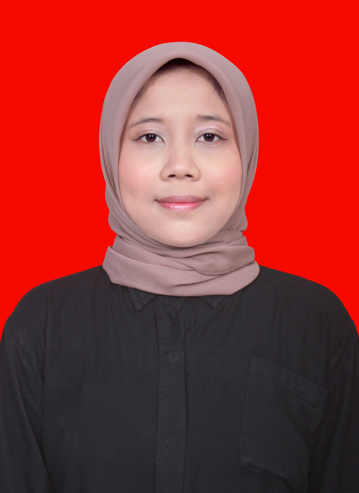

Mengenal Saya Lebih Dekat

Saya Nadya Intan Rayyano, lulusan S1 Teknik Informatika Institut Teknologi Nasional Malang dengan IPK 3.61. Saya memiliki kompetensi di bidang administrasi, pengelolaan data, dan dukungan operasional, didukung pengalaman magang sebagai Staff MIT di Thursina IIBS Malang serta proyek sistem informasi dan pelatihan data analytics (IBM SkillsBuild dan Widya Edutech).
Saya terampil dalam data entry, pengarsipan dokumen, penyusunan laporan, dan pengelolaan basis data MySQL, serta menguasai Microsoft Office, Google Workspace, dan Figma.
Etos kerja saya berakar pada akurasi tinggi, kerapian tata kelola dokumen yang terstandardisasi, serta fleksibilitas cepat tanggap dalam mendukung target tim fungsional maupun lintas divisi.
Cara Saya Bekerja
Teliti
Menjaga presisi tinggi dalam pencatatan data dan pemeriksaan dokumen tanpa melewatkan detail sekecil apa pun.
Disiplin
Menghargai ketepatan waktu dalam penyelesaian tugas dan konsisten mengikuti prosedur standar operasional.
Fleksibel
Mudah beradaptasi dengan alur kerja dinamis, perangkat lunak baru, serta siap mendukung berbagai kebutuhan tim.
Komunikatif
Mampu menyampaikan informasi secara jelas, berkoordinasi santun dengan rekan kerja, dan terbuka menerima masukan.
S1 Teknik Informatika
Institut Teknologi Nasional Malang, Kota Malang, Jawa Timur
Periode Studi: 2022 — 2026Bidang yang Saya Tuju
Kombinasi latar belakang teknis informatika dan ketertarikan mendalam pada efisiensi operasional menempatkan minat utama saya pada bidang-bidang berikut:
Ingin tahu lebih banyak?
Jelajahi portofolio proyek dan hasil implementasi teknis yang pernah saya kerjakan selama masa studi dan pelatihan.